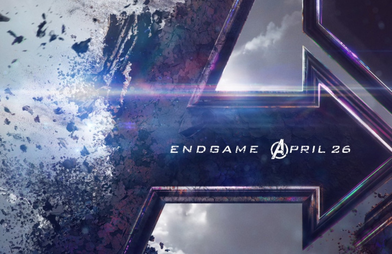

Thanos, referred to as the Dark Lord by his most loyal underlings and the Mad Titan by the galactic community, is a powerful, extremist, genocidal, psychopath, violent and tyrannical Titan warlord who rules over a distant region of space and commands two massive armies, known as the Chitauri and the Outriders, and a small group of followers known as the Black Order. His own main objective was to bring stability to the universe, as he believed its massive population would inevitably use up the universe's entire supply of resources and condemn it. However, his methodology to succeed was warped; through using the Infinity Stones, Thanos intended to harness their power to exterminate half of all life in the universe.
"I know what it's like to lose. To feel so desperately that you're right, yet to fail nonetheless. It's frightening, turns the legs to jelly. I ask you to what end? Dread it. Run from it. Destiny arrives all the same. And now it's here. Or should I say, I am."